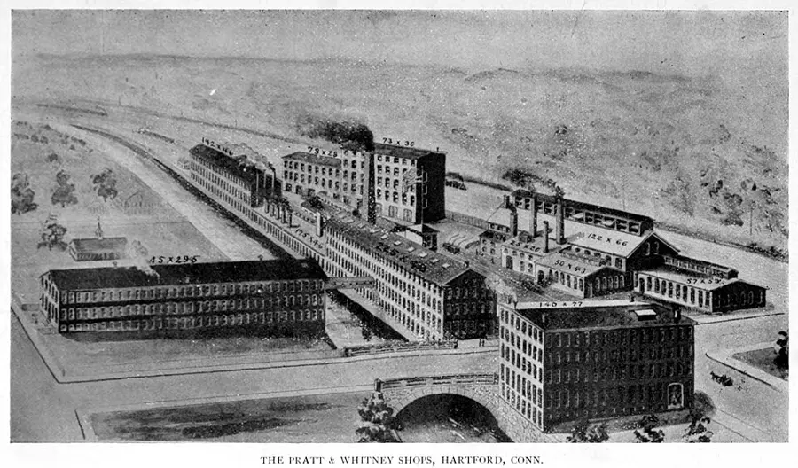
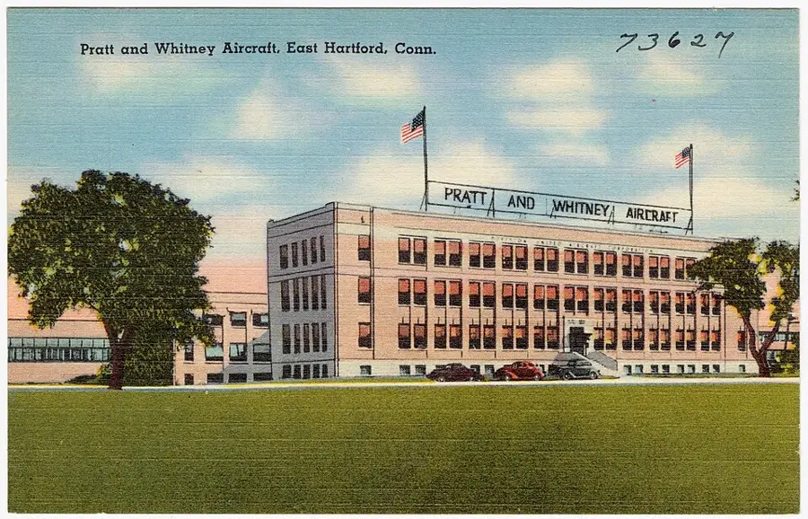

대표 로고대표 브랜드 마크
대표 로고대표 브랜드 마크프랫 & 휘트니 Pratt & Whitney
프랫 & 휘트니(Pratt & Whitney)는 미국의 항공기 엔진 제작회사이다. 항공기 엔진 외에 산업·발전용 가스 터빈, 선박용 터빈, 로켓 엔진도 제작하며 본사는 이스트하트퍼드에 있다.
최종 업데이트
프랫 & 휘트니는 어떤 브랜드인가
프랫 & 휘트니는 항공기 엔진을 중심으로 사업을 하는 미국 회사이다. 항공기 엔진 제작 업체로는 GE, 롤스로이스 plc에 이어 세계 3위에 해당한다.
항공기 엔진뿐만 아니라 산업·발전용 가스 터빈, 선박용 터빈, 로켓 엔진 등을 제작한다. 민간 항공기용과 군용 항공기용 엔진을 모두 갖추고 있으며, 캐나다에서 제작하는 엔진 계열은 따로 구분된다.
민간용 엔진은 JT9D의 개량형인 PW4000 계열 이후 신형 광동체용 엔진이 나오지 않아 대체로 협동체용으로 제작되어 있다. 본사는 이스트하트퍼드에 있다.
프랫 & 휘트니는 어떻게 시작되고 성장했나
프랫 & 휘트니는 1925년 미국에서 설립되었다. 창업자는 Frederick Rentschler이다.
본사는 이스트하트퍼드에 두었다. 모기업은 United Aircraft and Transport Corporation이다.
프랫 & 휘트니의 브랜드 아이덴티티는 무엇인가
항공기 엔진뿐 아니라 가스 터빈, 선박용 터빈, 로켓 엔진까지 제작하며, GE·롤스로이스 plc에 이어 세계 3위에 해당하는 엔진 제작사이다.
프랫 & 휘트니의 대표 제품과 서비스는 무엇인가
민간 항공기 엔진으로 JT3D/TF33, JT4A, JT8D, JT9D, JT12/J60, PW1000, PW2000/F117, PW4000, PW6000, V2500 등을 제작했다. GP7200은 엔진 얼라이언스 제품으로 분류된다.
군용 항공기 엔진에는 J42, J48, J52, J57, J58, J75, TF30, F100, F119, F135, PW1120이 있다. 프랫 & 휘트니 캐나다 제작 엔진으로는 JT15D, PT6A/B/C, PT6T, PW100, PW200, PW300, PW500, PW600, PW800, PW900이 있다.
이 밖에 산업·발전용 가스 터빈, 선박용 터빈, 로켓 엔진도 제작한다.
프랫 & 휘트니는 지금 어떤 상태인가
프랫 & 휘트니 로고는 어떻게 변해왔나
대표 로고대표 브랜드 마크사진으로 보는 프랫 & 휘트니의 역사


자주 묻는 질문
프랫 & 휘트니는 어느 나라 브랜드인가요?
프랫 & 휘트니는 미국의 에너지·산업재 브랜드입니다.
프랫 & 휘트니는 언제 설립되었나요?
프랫 & 휘트니는 1925년 설립되었습니다.
프랫 & 휘트니의 브랜드 아이덴티티는 무엇인가요?
항공기 엔진뿐 아니라 가스 터빈, 선박용 터빈, 로켓 엔진까지 제작하며, GE·롤스로이스 plc에 이어 세계 3위에 해당하는 엔진 제작사이다.
프랫 & 휘트니의 대표 제품은 무엇인가요?
민간 항공기 엔진으로 JT3D/TF33, JT4A, JT8D, JT9D, JT12/J60, PW1000, PW2000/F117, PW4000, PW6000, V2500 등을 제작했다.
프랫 & 휘트니는 현재 어떤 상태인가요?
항공기 엔진 제작 업체로는 GE, 롤스로이스 plc에 이어 세계 3위에 해당한다.
프랫 & 휘트니의 창업자는 누구인가요?
프랫 & 휘트니의 창업자는 Frederick Rentschler입니다(위키데이터 기준).
프랫 & 휘트니의 본사는 어디에 있나요?
프랫 & 휘트니의 본사는 이스트하트퍼드에 있습니다(위키데이터 기준).
출처와 검증
프랫 & 휘트니 관련 참고: 공식 웹사이트 · 위키데이터 Q173150 · 한국어 위키백과 · 영어 위키백과. 브랜드명은 한글과 원어를 함께 표기하되 데이터에 없는 표기는 만들지 않습니다. 기원 국가·설립연도는 검수된 정의문에서 확인된 값을 우선하고, 없을 때만 공식 웹사이트 URL이 일치하는 위키데이터 개체의 값을 씁니다. 위키데이터 값은 2026-11-12 기준입니다.